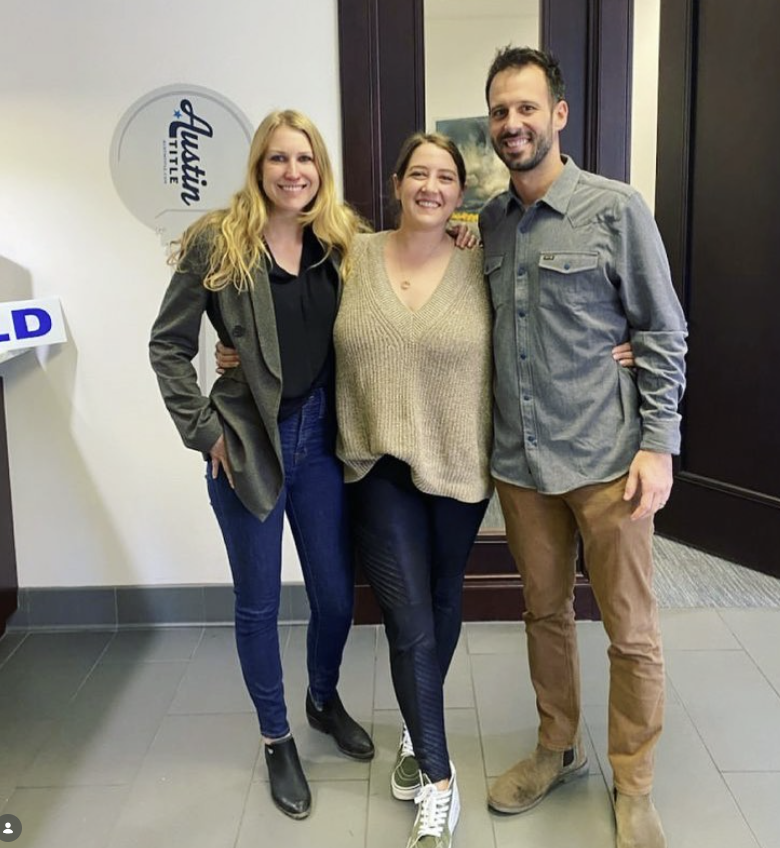

NMLS#: 2653540 (Company) · 513013 (Adam Styer)
About Adam
I'm originally from Ohio (Go Bucks), but Austin has been home for more than 16 years. I loved it enough that most of my family eventually made the move here too. These days, you'll find me cheering for both Ohio State and Texas — unless they're playing each other.
I've been helping people finance homes since 2013 and have personally guided more than 1,000 transactions from application to closing. Over the years, I've learned that most borrowers don't need another salesperson. They need someone who can solve problems, explain complicated situations clearly, and get loans closed when the path isn't obvious.
That's where I focus.
I work with a wide range of clients, but I particularly enjoy helping self-employed business owners, real estate investors, physicians, executives, and other high-income professionals whose financial situations don't fit neatly into traditional lending guidelines. Whether it's bank statement loans, asset-based lending, DSCR financing, jumbo loans, or complex income analysis, I spend my time finding solutions instead of looking for reasons a loan won't work.
My approach is straightforward. I communicate clearly, move quickly, and tell clients the truth — even when it's not what they want to hear. Real estate transactions are stressful enough. You shouldn't have to wonder what's happening with your financing.
When you're working with me, you'll get direct access to me throughout the process. My team and I stay proactive from pre-approval through closing so there are no surprises and no unnecessary delays.
Outside of work, I'm married to my wife, Britney Jo, and we're raising three amazing kids here in Austin. I'm also grateful to be more than 10 years sober and actively involved in the local recovery community. My faith, family, and commitment to serving others shape both my personal life and the way I do business.
If you're looking for a loan officer who can handle complex situations, communicate honestly, and stay engaged from start to finish, I'd be honored to help.
Send Your ScenarioExperience beyond the loan
I have been on the ownership side of the table, too
My mortgage experience helps me understand loan guidelines. Owning real estate has taught me what happens after closing: repairs that do not fit the budget, financing decisions that limit the next move, and property systems that look simple until they fail. I do not have every answer, but I have learned to ask better questions before a client commits to a property or a loan structure.
From an FHA first home to a long-term rental
In 2015, before I entered the mortgage business, I bought my first property on Austin's East Side for $250,000 with an FHA loan. I lived there, later moved to Brentwood with my fiancée — now my wife, Britney Jo — and converted the East Austin house into a rental. We eventually sold the Brentwood home and moved back into the East Austin property temporarily while looking for a longer-term home.
During that second period of occupancy, we completed a cash-out refinance, removed the FHA mortgage insurance, and used part of the proceeds for a renovation that included a new roof and interior work. When we found our home in West Austin near the Pennybacker Bridge, the East Austin house became a rental again. That one property taught me firsthand how occupancy, mortgage insurance, renovation plans, reserves, and refinance timing can shape the next several decisions.
Rentals, renovations, and problems the spreadsheet missed
We later added residential investment properties in Austin and Kyle and completed flips in Buda and Tennessee. The experience was not a straight line. At one property, mold exposed shortcuts taken during an earlier renovation and led to extensive interior work. I have dealt with cast-iron plumbing, roofs, water damage, property-tax protests, and the gap between a repair estimate and what a project actually costs.
At the Kyle rental, tenants reported that closet doors would not close. The underlying issue turned out to be a serious foundation failure in a nearly new home. Resolving it ultimately required legal action involving the builder. It was an expensive lesson in inspections, warranties, documentation, tenant communication, and maintaining enough liquidity for a problem no pro forma predicted.
Multifamily and commercial ownership interests
My experience also includes serving as a general partner in the acquisition of a 44-unit apartment community in Odessa and helping raise much of the purchase capital. I have ownership interests in an industrial triple-net-lease property in Odessa, an office building in Washington, D.C., and an urgent-care facility in the Houston area. Those investments have given me exposure to partnership structures, commercial leases, capital planning, and property risks that are different from a one-to-four-unit rental.
Operating a Hill Country short-term rental
In 2022, Britney Jo and I purchased Adobe Creek Ranch, an approximately 25-acre short-term rental near Fredericksburg with three living spaces, a pool, septic and propane systems. We manage it ourselves. That has meant learning the practical side of HVAC systems, pool equipment, septic service, agricultural exemptions, seasonality, guest operations, and the reserve needs of a large rural property.
Freeze-related water damage led to a full interior renovation of the guest house, where we also discovered a legacy plumbing system that needed to be replaced. In 2026, we replaced both a metal roof and a shingle roof. The ranch has reinforced a simple lesson: qualifying for a short-term-rental loan and operating a resilient short-term-rental business are two different questions.
How this helps a borrower
I have personally used FHA financing, cash-out refinances, and home-equity lines of credit, and I have used property equity to create flexibility for later investments. I also know that leverage can magnify a bad assumption just as quickly as it can create an opportunity.
I am still your mortgage broker — not your attorney, CPA, contractor, insurer, or property manager. But when we review an investment scenario, I look beyond whether a lender will approve it. I want to understand whether the reserves, property condition, operating assumptions, and financing structure leave you room for what ownership may bring next.
Who I Work With
Every buyer is different. Here's where I spend most of my time:
First-Time Buyers
Navigate the entire process from first conversation to keys in hand. Down payment assistance programs, FHA options, conventional loans with 3–5% down. We make it simple.
Move-Up Buyers
Selling one home and buying another at the same time is complicated. I help you coordinate timelines, bridge financing if needed, and avoid getting stuck without a place to land.
VA Borrowers
Served our country? The VA loan is the best mortgage product in existence. Zero down, no PMI, competitive rates. I help veterans use this benefit correctly in competitive Austin offers.
Self-Employed Borrowers
Business owners, contractors, freelancers. Standard W-2 underwriting doesn't always fit. Bank statement loans, P&L qualification, and conventional paths —I find what works.
Real Estate Investors
DSCR loans that qualify on rental income instead of personal income. No W-2s, tax returns may not need to be the primary income document. Scale a portfolio without hitting DTI walls. LLC purchases supported.
Refinancers
Rate-and-term refinances, cash-out, debt consolidation. I compare your current loan against the market honestly —if it doesn't make financial sense, I'll tell you.
Why Work With an Independent Mortgage Broker?
Bank loan officers sell one bank's products. I shop the market for you.
Shop 40+ Lenders
I compare rates, fees, and underwriting guidelines across dozens of wholesale lenders. You get the best terms available, not the best terms one institution offers.
Work for YOU
Brokers work for clients, not corporations. No quotas. No products I'm "supposed to push." My only job is to find the right loan at the right price.
Deeper Expertise
Brokers specialize in mortgages —that's it. I know every loan program, every lender's guidelines, and how to structure deals that pass underwriting the first time.
Single Point of Contact
You don't get transferred around. I handle pre-approval, rate lock, conditions, closing —from first call to final signature. One person, accountable throughout.
Creative Problem Solving
Challenging credit? Unique income structure? Investment scenario? When one lender says no, I find one who says yes —because different lenders have different guidelines.
Speed That Wins Deals
Upfront scenario review, clear expectations, and proactive communication before you have to ask.
Deep Austin Market Knowledge
I don't just process loans — I know this market. That knowledge makes a difference in how deals are structured and won.
Austin's market is unlike most of the country. You're often dealing with multiple offers, TREC contracts with clear, documented closing plan windows, and listing agents who vet your pre-approval letter before they'll even show the home. A generic, bank-issued letter doesn't cut it here. My pre-approvals are underwriter-reviewed and carry weight.
The Austin MSA spans two counties — Travis and Williamson — and they work differently. Travis County (Austin, Pflugerville, Cedar Park in part) uses TCAD for appraisals. Williamson County (Round Rock, Georgetown, Leander, Cedar Park in part) uses WCAD. Property tax rates vary by city and MUD district. These details affect your payment calculation and should be factored in before you write an offer.
I also know the suburb markets well. Georgetown is a different buyer than Round Rock. Leander's new construction scene attracts different loan programs than Pflugerville's resale inventory. Cedar Park's price point brings jumbo loans into play more often than people expect. This market knowledge shapes how I match clients to loan products.
Austin's rental market — particularly short-term rentals during SXSW, ACL, Formula 1 at COTA, and UT events — makes it one of the stronger DSCR loan markets in the country. I've helped investors acquire rental properties in East Austin, South Congress, Buda, and Kyle using rental income to qualify instead of personal income.
Process Focus
Clear
Upfront scenario review, proactive updates, and no last-minute guesswork.
Loans Closed (Career)
1,000+
Across all loan types and buyer profiles
Client Feedback
Reviews
Feedback across public review platforms and client conversations.
Lenders Accessed
40+
Wholesale lenders, not just one bank
Markets I Serve Across Central Texas
I'm licensed across Texas and work with clients statewide, but my expertise runs deepest in Austin and the surrounding suburbs.
Austin
All neighborhoods —78701 to 78749 and beyond. East Austin, South Congress, Mueller, Domain, Northwest Hills, Lake Travis, and everything in between.
Round Rock
Williamson County. Dell Diamond, La Frontera, Stone Oak, Teravista. Mix of conventional resale, new construction, and FHA buyers. Strong employer base near IH-35 corridor.
Cedar Park
Brushy Creek, Twin Creeks, Buttercup Creek. Higher median price points, jumbo loans, strong school districts. Travis and Williamson County properties.
Leander
Crystal Falls, Mason Hills, Travisso. Heavy new construction from Lennar, Meritage, Perry. Capital MetroRail northern terminus. Williamson County taxes.
Georgetown
Wolf Ranch, Sun City, Parkside on the River. Williamson County seat. Texas's largest 55+ community —Sun City Georgetown by Del Webb. VA and asset-based income qualification.
Pflugerville
Blackhawk, Windermere, Falcon Pointe. Primarily Travis County. Amazon fulfillment, Samsung Taylor campus nearby. Lake Pflugerville access. Pflugerville ISD (independent from AISD).
Background & Credentials
NMLS Licensed Loan Originator
NMLS #513013Federally licensed and state-regulated. Maintain annual continuing education requirements and comply with all NMLS standards. Kyber Mortgage Corporation dba HyperSmart Home Loans NMLS #2653540.
Independent Broker Since 2017
Kyber Mortgage Corporation dba HyperSmart Home LoansLeft retail banking to operate as an independent wholesale mortgage broker. Access to 40+ lender relationships lets me compare available rate, cost, term, and program tradeoffs for each client's scenario.
10+ Years Mortgage Lending
Since 2013Experienced across a broad loan menu: Conventional, FHA, VA, Jumbo, DSCR Investment, Construction, Bank Statement, and Down Payment Assistance programs.
Ohio Roots, Austin Heart
16+ Years in AustinOriginally from Ohio, planted roots in Austin over 16 years ago. I know this market from the inside — neighborhoods, school districts, MUD taxes, county appraisal nuances.
Client Reviews
Google, Zillow, and direct client feedbackClient reviews consistently point to the things that matter in a mortgage file: clear communication, honest guidance, and a process that keeps moving.
How I Work
Honesty
No hidden fees. No surprises. No pressure. You'll know exactly what you're paying and why before you ever sign anything. If a loan doesn't make sense for you, I'll tell you that too.
Speed
Clear scenario review and proactive updates before you have to ask. Timelines depend on the borrower, property, program, documentation, and third-party services.
Education
I take time to explain your options, rates, terms, and what every decision means long-term. A Mortgage Coach presentation, a quick Loom video, a phone call —whatever helps it click.
Family First
We treat every client like family. Your goals become our goals. Your success is our success. We celebrate when you get the keys to your dream home.
Problem-Solving
Challenging credit? Unique income? Tight timeline? We've seen it. I don't give up on a file —I find the lender and the path that works. Every scenario has an answer.
Accountability
One point of contact through the entire process. My personal cell. Direct access. No getting transferred, no chasing updates. I own the file from application to close.
Community & Connections
Great lending starts with great relationships. I stay deeply connected to Austin's real estate community through networking events, mastermind groups, and industry partnerships — because the stronger my network, the better I can serve you.

What Clients Say
"Adam and his team were very responsive, always available, and quick to answer my questions. They work quickly and get you as far as they can through the approval process so that your offer looks more competitive to the seller."
"Adam was very knowledgeable and offered us a very competitive rate. We already had a pre approval letter with another lender but in the end went with Adam. He took the time to explain different rates, put it together in a nice overview and even recorded a short video explaining things."
"Adam's team helped us through the refinance process from beginning to end. They were very easy to work with and answered any and all questions in a timely and friendly manner. I would highly recommend them to anyone who is considering a refinance."
"Great service - used multiple times. Adam's team was quickly able to help us find the right mortgage to fit our needs! Quick, professional, and comprehensive. We've used his team multiple times now."
"Very knowledgeable. Without Adam and his team, I would not have a home right now. I was a first-time home buyer with a lot of reservations, questions, and worries about the home buying process and obtaining financing. Adam and his team answered every question I had, talked through the process with me."
"Lender Hero! Just want to drop by and say thank you for all that you guys accomplished for us. For those looking into buying a house for the first time, like my wife and I, or refinance your current home, Adam is the guy to go to."
Client Reviews Across Multiple Platforms
Recent client feedback highlights communication, clarity, and problem-solving.
Frequently Asked Questions
Adam has been originating mortgages since 2017 and has closed 1,000+ loans across his career. He launched Adam Styer | HyperSmart Home Loans as an independent broker shop after years on the retail side. NMLS #513013.
Austin metro and all of Texas. Adam is licensed in Texas only. That covers Austin, Round Rock, Cedar Park, Leander, Georgetown, Pflugerville, Buda, Kyle, Dripping Springs, Lakeway, Bee Cave, San Marcos, New Braunfels, Bastrop, and every other Texas market — but no out-of-state lending.
Conventional, FHA, VA, jumbo, construction, DSCR and other non-QM, bank statement loans, and high-net-worth/asset-depletion programs. As an independent broker with 40+ wholesale lender relationships, Adam can match the right investor to the scenario instead of being stuck with one bank's underwriting box.
Three things. One — Adam can compare available options across 40+ wholesale lender relationships and explain rate, points or credits, closing costs, and program tradeoffs for a specific scenario. Two — the process emphasizes early issue-spotting and clear timelines. Three — you work directly with Adam instead of a call center.
Ready to Talk Through Options?
Send the short version first. I will tell you if there is a path, what documentation matters, and whether a full application is worth starting.
Adam Styer NMLS #513013 • Kyber Mortgage Corporation dba HyperSmart Home Loans NMLS #2653540 • Licensed Mortgage Broker in Texas